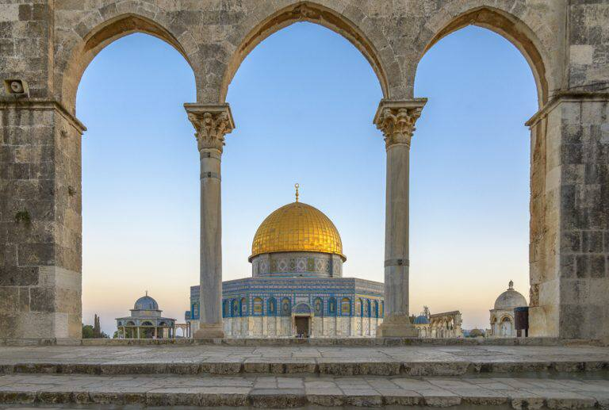

المسجد الأقصي- فلسطين

بشكل عام تزدهر السياحة الدينية في فلسطين بسبب
وجود العديد من المزارات الدينية ذات المكانة والقدسية
العالية لدي بعض اصحاب الديانات مثل المسجد الأقصي
وقبة الصخرة والمسجد الابراهيمي وكنيستي المهد
والقيامة.
لا يخفي عن احد مسجد الصخرة أولي القبلتين وثالث
الحرمين الشريفين الواقع في قلب مدينة القدس. المسجد
الاقصي أيضا من أقدم المساجد في العالم